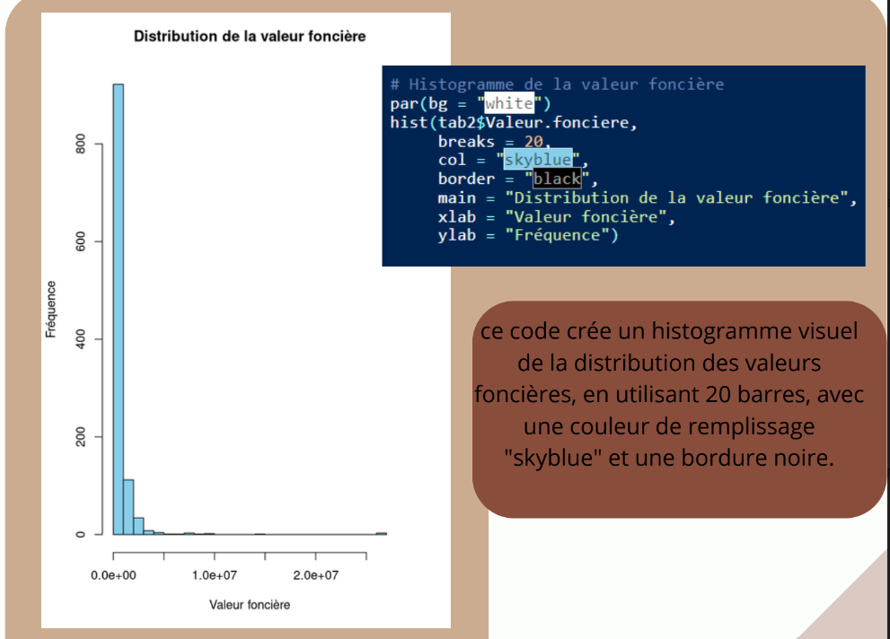
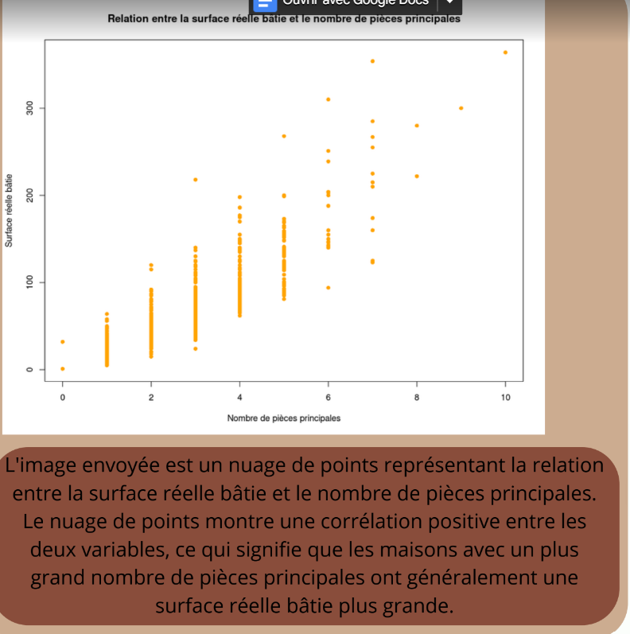

Nous devons apprendre les fonction de Rstudio afin de faire des graphiques clairs nets et précis. Dans ce projet fait à la fin du 1er semestre, nous avons du utiliser presque toutes nos connaissances dans pratiquement toutes les matières.

Voici ci-dessus le graphique des valeurs foncière d’Avignon et du 16ème arrondissement de Paris.

Et la relation entre la surface réelle bâtie et le nombre de pièces principales.
On en a conclue que le 16ème arrondissement de Paris et Avignon ont des lieux, cultures et capitals différents, ce qui expliquait la différence énorme en valeur foncière.